X

|
(UNESP) Na figura o triângulo ABD é reto em B, e AC é bissetriz de 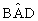 . Se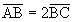 , fazendo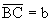 e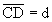 . Qual o valor de d? |
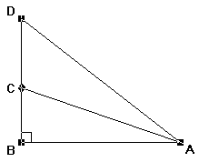 |
Solução:
A figura abaixo ilustra toda a situação apresentada pela questão.
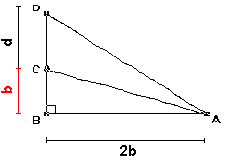
Pelo Teorema da Bissetriz Interna de um triângulo, teremos a seguinte proporção:
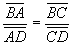
Mas:
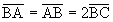
, ,Substituindo estas igualdades na proporção acima teremos:
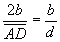
Resolvendo:
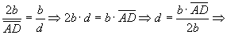
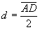
IPelo Teorema de Pitágoras:
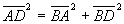
Com as devidas substituições(observe na figura que
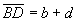
):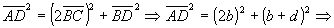
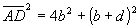
IIElevando ao quadrado ambos os membros da equação I :
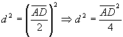
III
Multiplicando ambos os membros da equação III por 4:
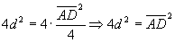
IVSubstituindo a equação II na IV, desenvolvendo e simplificado:
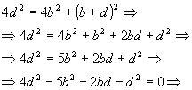
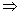
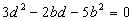
VTemos em V uma equação do segundo grau na incógnita d. Resolvendo esta equação:
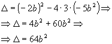
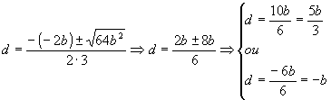
Descartando a solução negativa para d, pois ele representa um comprimento, temos que:
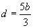
 Voltar à Lista de Questões
Voltar à Lista de Questões